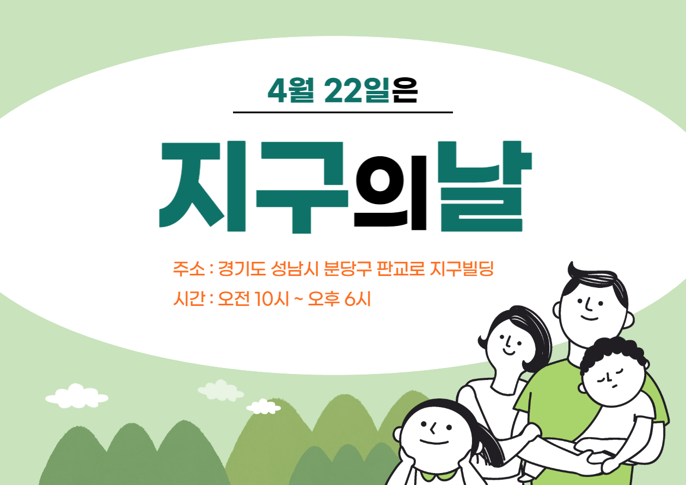

커뮤니티
이곳은 소통하는 공간입니다.
지구 ON은 당신이 서 있는 오늘과 걸어온 모든 하루를 응원합니다.

공지사항
| 제목 | 2022년 4월 22일, 「지구의 날」 기념 행사를 지구ON 판교 본사에서 진행합니다! |
|---|---|
| 등록자 | 운영자 |
| 작성일 | 2022-04-20 11:43:50 |
| 조회수 | 1,080 |
| 내용 |
안녕하세요, 지구ON 운영자입니다:) 오늘은 지구ON 회원님들께 이틀 후인 4월 22일 지구의 날 기념 행사에 대한 안내를 전하려고 합니다. 2022년 「지구의 날」 기념 행사는 지구ON 판교 본사에서 4월 22일 금요일 오전 10시부터 오후 6시까지 진행됩니다. 이제 4월 하순으로 접어들면서 날씨가 많이 포근해졌는데요~ 곧 있으면 다가올 여름을 생각하면 이렇게 좋은 날씨를 즐겨야 한다고 생각해요! 그래서 이번 지구의 날 행사는 작년과는 달리 야외를 중심으로 진행하고자 합니다~  점심시간이 끝나고 오후 2시부터는 기후위기의 심각성에 대한 강연이 진행될 예정입니다. 기후위기의 심각한 현황을 조금이라도 많은 사람들이 알 수 있도록 되도록 많은 사람들을 초대해주셨으면 좋겠어요:) 점심, 간식을 무료로 제공합니다, 여러분들을 언제든지 환영해요 !! 🥰 |
| 이전글 | 3월 21일, 봄의 시작 춘분(春分)을 축복하는 「서울봄맞이축제」에 대한 안내 |
| 다음글 | [지구ON 스웨덴 지사] 하지(夏至) 기념 「미드소마(Midsommar)」 축제 안내 (6/21~6/26) |